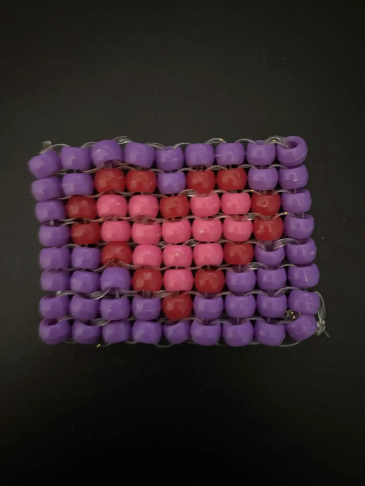

tapestry beading is a way to make designs using just beads and string. you can make it super big or really small like I have in the photo. any design that you can make in a grid, you can make with beads!
find a design pattern online (I usually just search “heart tapestry pattern” or whatever design I want and can find a good one) and gather the color of beads you want. I also like to lay out my beads in the grid pattern to make it easier to see what column I’m working on. tie one of the corner beads to the string and then put all of the beads in that column onto the string. then start at the bottom (or top if you started at the bottom) and put the bead onto the string. then loop the string through the bead next to it in the previous column. then put the next bead on and loop it through the bead next to it in the previous column. continue to do this until you reach the end. then tie the last bead and you’re done! it can be pretty tricky to get at first but there are plenty of tutorials on youtube that you can use if needed.